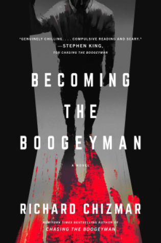

Posted on October 06, 2023
{% include "_partials/_netgalley.njk" %}
Title: Becoming the BoogeymanThe terrifying sequel to the acclaimed New York Times and USA TODAY bestselling novel Chasing the Boogeyman, which was hailed as “genuinely chilling and something brand-new and exciting” (Stephen King) and “unforgettable” (Harlan Coben).
A riveting, haunting sequel to the New York Times bestselling thriller Chasing the Boogeyman—a tale of obsession and the adulation of evil, exploring modern society’s true-crime obsession with unflinching honesty, sparing no one from the glare of the spotlight. Will those involved walk away from the story of a lifetime in order to keep their loved ones safe? Or will they once again be drawn into a killer’s web? As the story draws to its shattering conclusion, only one person holds all the answers—and he just may be the most terrifying monster of them all.
A couple of years ago, I had the pleasure of reading and reviewing an eARC of Richard Chizmar’s Chasing the Boogeyman. This year, I am honored to have the pleasure to read and review that book’s sequel, Becoming the Boogeyman.
My favorite thing about both Chasing the Boogeyman and Becoming the Boogeyman? That Richard Chizmar made himself (and his family) into characters in the story. He mixes his own real life with fiction to create the story. Are all of the characters real? No. But some of them are. Figuring out which ones, if any, are real (aside from Richard and his family) and which are fictional is part of the fun. Not to mention that some of the characters might be fictional but be based on people Richard knows in real life.
This book has a downright creepy atmosphere. Imagine having written a book about a serial killer only for that killer’s M.O. to start being used to kill again – even though you know the killer is still locked up tight. And what if it seems those killings are starting to target you? Yeah – creepy, strange, and at the same time, exciting. This book put forth a great atmosphere and I absolutely loved it.
Richard Chizmar has worked with Stephen King… so obviously he has a great writing style. What l love most about Becoming the Boogeyman, and the first one Chasing the Boogeyman, is that it is written to mix reality with fiction. It is written to not only engage you but to, in some cases, make you question what parts are real and what parts aren’t. You have to be a pretty damned amazing writer to pull that off and he does is beautifully.
Oh, I could go on and on about the plot for this book. It really is a brilliant plot line. Sure, we’ve all seen the “killer was locked up years ago and now it looks like he’s back” trope. I mean, that trope has even been used on shows like Criminal Minds. But this one has twists and turns that you wouldn’t even expect in a million years. This one mixes fiction and reality and makes it into a cohesive story. It’s a superb plot using a tried-and-true trope and I’m here for it.
If you’re looking for intrigue this book has it by the truckload. You’re always wondering what happens next, when the next murder will be, who will be murdered, how they’ll be found, etc.. You just won’t want to put Becoming the Boogeyman down.
The ending of this book. First, figuring out who is doing it and why they’re doing it. Finding out if there’s any connection to the original killer and if so what. But the epilogue/”After” section – holy cow. That sent a shiver down my spine and made me hope for perhaps a third installment. Of course, that is all up to Mr. Chizmar. But I do really hope there is a third installment.
I gave this one 5 stars because it kept me coming back for more and wanting to know more. I can’t wait to see what other books Richard Chizmar has in store for us.